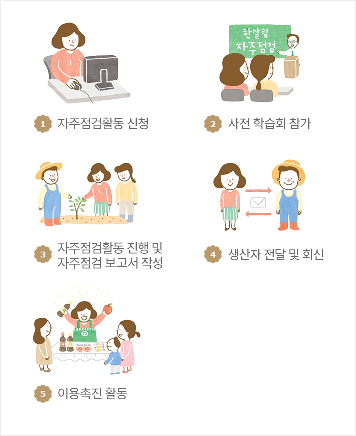

생산자 자주관리활동이란?
생산자가 한살림과 약속한 생산방법에 근거하여 생산과정을 스스로 책임있게 관리하는 활동입니다.
2016년 전체 생산자 가운데 생산자 자주관리 점검표를 제출한 비율은 농산물 66%, 가공품·축산물·수산물·생활용품 100%에 이릅니다.
- 한살림에 물품을 공급하는 모든 생산자가 참여합니다.
- 농산물 생산자는 물품을 출하하기 전에 스스로 관리한 내용을 자주관리점검표에 기록하여 한살림에 제출하고 이상이 없음을 확인한 후 물품을 공급합니다.
- 한살림은 생산자가 작성하여 제출한 자주관리점검표를 확인합니다.
- 생산자가 제출한 자주관리점검표는 조합원 자주점검활동 자료로도 활용됩니다.
함께하는 자주관리
한살림이 취급하는 물품의 기준은 소비자들이 직접 참여해 만듭니다. 생산자와 소비자의 신뢰를 바탕으로 만든 한살림 물품은 믿을 수 있습니다.

- 1. 자주점검활동 신청
- 2. 사전 학습회 참가
- 3. 자주점검활동 진행 및 자주점검 보고서 작성
- 4. 생산자 전달 및 회신
- 5. 이용촉진 활동
자주관리
생산자가 스스로 물품 생산과정을 점검하고 확인합니다.